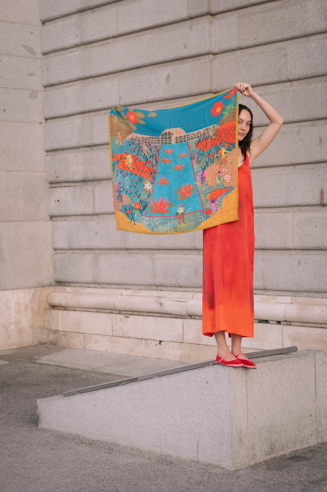
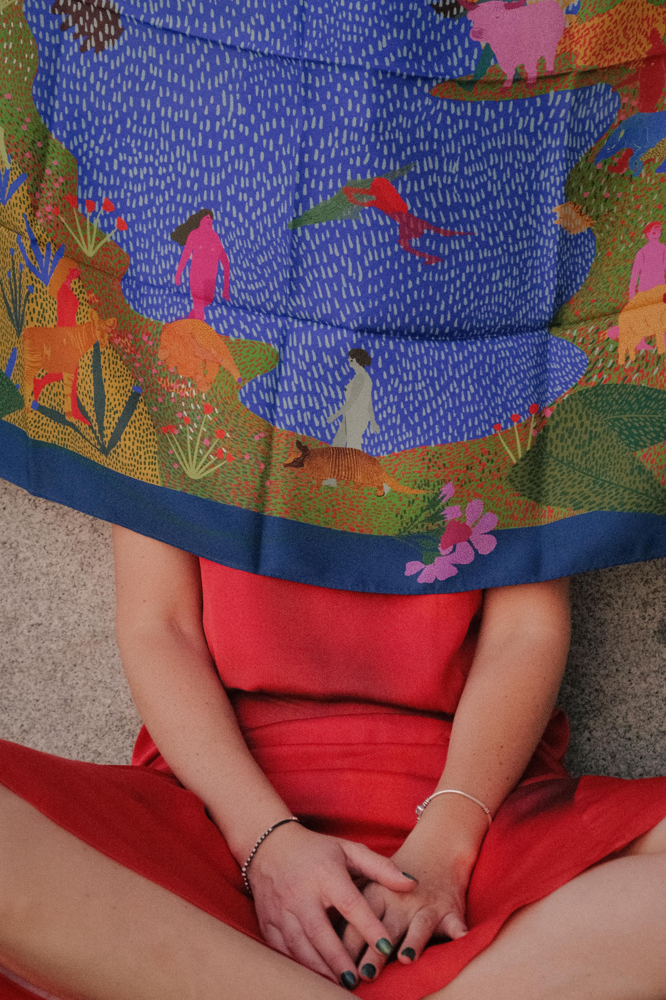
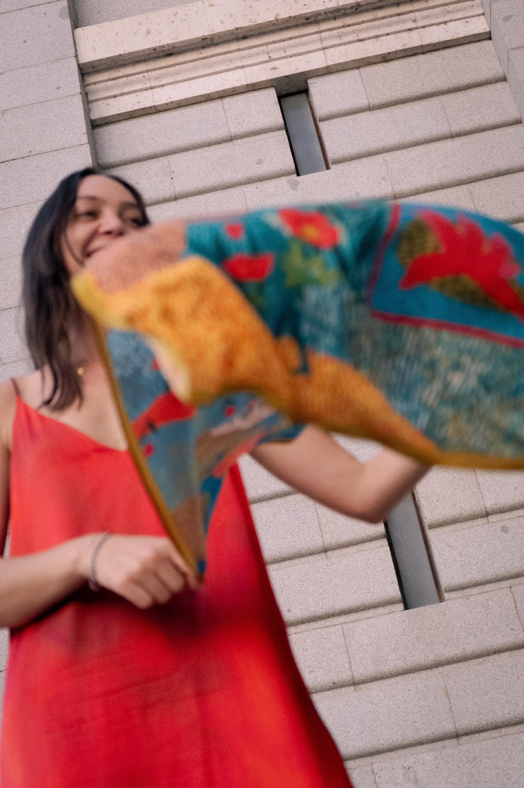
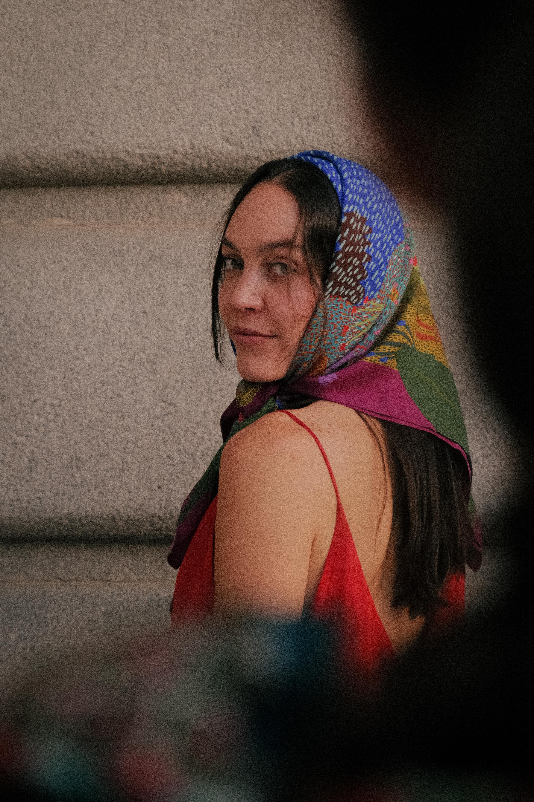

<title>María Méndez — Y SI? Summer 2025</title>
<meta name="viewport" content="width=device-width, initial-scale=1.0">
<link rel="icon" type="image/png" href="assets/favicon.png">

<link rel="stylesheet" href="styles/variables.css">
<link rel="stylesheet" href="styles/base.css">
<link rel="stylesheet" href="styles/components.css">
<link rel="stylesheet" href="styles/page-project.css">

<!-- ─── NAV ─────────────────────────────────────────────────── -->
<nav class="comp-nav page-project--textile">
  <a class="comp-nav__logo" href="work.html">Maria Mendez</a>
  <ul class="comp-nav__links">
    <li class="is-active"><a href="work.html">Work</a></li>
    <li><a href="about.html">About</a></li>
    <li data-placeholder>Shop</li>
    <li><a href="contact.html">Contact</a></li>
  </ul>
  <div class="comp-nav__dot"></div>
</nav>

<!-- ─── PAGE ─────────────────────────────────────────────────── -->
<main class="page-project page-project--textile">

  <!-- PROJECT HEADER -->
  <header class="project-header">

    <div class="project-header__left">
      <p class="project-category">Textile · 2025</p>
      <h1 class="project-title">Y SI?<br>Summer 2025</h1>
      <div class="comp-spec-sheet">
        <div class="spec-item">
          <div class="spec-label">Client</div>
          <div class="spec-value">María Méndez</div>
        </div>
        <div class="spec-item">
          <div class="spec-label">Discipline</div>
          <div class="spec-value">Diseño textil, Diseño de estampados &amp; Diseño de colección</div>
        </div>
        <div class="spec-item">
          <div class="spec-label">Year</div>
          <div class="spec-value">2025</div>
        </div>
      </div>
      <button type="button" class="cta-link gallery-view-all js-view-gallery">Ver toda la galería →</button>
      <p class="gallery-note">Arrastra las imágenes para moverlas · Doble clic para ver en galería</p>
    </div>

    <div class="project-header__right">
      <p class="project-desc">¿Y si, al llegar a cierta edad, pudiéramos elegir un animal que nos acompañara para siempre? Uno que compartiera sus cualidades, su energía y su compañía. ¿Y si, así como elegimos un nombre, pudiéramos elegir también una fragancia que nos identificara? ¿Un aroma que nos envolviera y hablara de quiénes somos? ¿Y si todos tuviéramos un refugio, ese lugar —o ser— donde nos sentimos seguros?</p>
      <p class="project-desc">De estas preguntas nace Y SI?, una colección de pañuelos 100% seda que construye un pequeño mundo imaginario alrededor de la identidad, la compañía, los sentidos y la idea de refugio. Cada estampado guarda un fragmento de ese universo soñado, convirtiendo la seda en un espacio para imaginar quiénes somos y qué elegiríamos llevar con nosotros.</p>
      <p class="project-desc project-desc--secondary">La colección parte de la imaginación como una herramienta para construir identidad. Animales, flores, aromas y paisajes se mezclan en composiciones llenas de color y narrativa, creando piezas que funcionan tanto como accesorios como pequeños mundos portátiles.</p>
    </div>

  </header>

  <!-- GALLERY — Layout B only. María's numbering has gaps at 03/06/11,
       so the stack only has 4 pieces (01,02,04,05), not 6. -->
  <section class="comp-gallery-interactive"
    data-gallery-cover="assets/projects/y-si-summer-2025/y-si-summer-2025-cover.jpeg"
    data-gallery-extra='[
      {"src":"assets/projects/y-si-summer-2025/y-si-summer-2025-07.jpeg"},
      {"src":"assets/projects/y-si-summer-2025/y-si-summer-2025-08.jpeg"},
      {"src":"assets/projects/y-si-summer-2025/y-si-summer-2025-09.jpeg"},
      {"src":"assets/projects/y-si-summer-2025/y-si-summer-2025-10.jpeg"},
      {"src":"assets/projects/y-si-summer-2025/y-si-summer-2025-12.jpeg"},
      {"src":"assets/projects/y-si-summer-2025/y-si-summer-2025-13.jpg"},
      {"src":"assets/projects/y-si-summer-2025/y-si-summer-2025-14.jpg"}
    ]'>

    <div class="comp-drag-hint" id="dragHint">Move to Explore →</div>

    <div class="gallery-canvas" id="galleryCanvas">

      <div class="gallery-piece gp-1" data-rotation="-8">
        
      </div>

      <div class="gallery-piece gp-2" data-rotation="6">
        
      </div>

      <div class="gallery-piece gp-3" data-rotation="-4">
        
      </div>

      <div class="gallery-piece gp-4" data-rotation="9">
        
      </div>

    </div>
  </section>

</main>

<script src="scripts/gallery.js"></script>
